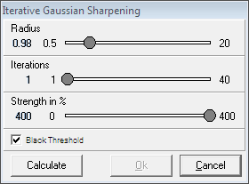
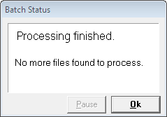

– compiled by Sergei Schmalz, last updated on 30.06.2012
This guide is not intended to be the best one or whatsoever, it's just a "yet another one". Its main goal is to share information with interested persons. So, if you think you have some good ideas of how this guide could be eventually improved, feel free to email me at sergiuspro@yahoo.de and I'll take into consideration your suggestions. Lucky hunting! ;-)
1) required software:
2) preferred hardware:
If you have a really speedy internet connection, then probably the best way would be to work with the FITS files, even though you'll have to process them, before you can view them, unlike JPEG or GIF images which can be viewed right away. Even if your internet connection is relatively slow, still you should try out working with FITS images, while preferrably working with GIF images. So, first of all here's the description of where you can get FITS images.
1) Connect with your FTP-client to one of the following two public FTP-servers; I prefer the first one (no username, password and port required):
– ftp://lasco6.nascom.nasa.gov
– ftp://sohoftp.nascom.nasa.gov
2) Browse through the following folders:
– /lasco/lastimage/level_05/ (for the first server)
– /qkl/lasco/quicklook/level_05/ (for the second server)
3) Scroll down to the folder of the required date (e.g. "120205" for 2012/02/05) and open it.
4) Open the folder "c2" for the LASCO C2 images, or "c3" for the LASCO C3 images.
Now you can see all FITS files available for the chosen date. Important: The numbering order of these files is not chronological! A progressive sequence of two file-numbers is not necessarily a progressive sequence of two images on the time scale!
5) Open the text file "img_hdr.txt" at the bottom of the file list.
Now you can see the time-stamps of all image files from which you can conclude the chronological sequence of images. Also some additional information is given therein. Download the required FITS files. Important: From the LASCO C2 use only images with the resolution 1024×1024 and filter/polarization Orange/Clear; from the LASCO C3 use only images with the resolution 1024×1024 and filter/polarization Clear/Clear. Here is an example for the LASCO C2:
These images have the original resolution of 1024×1024 pixels. They are useless for hunting SOHO comets, because they become available online much later than FITS or GIF files (someone will already have reported a comet found in FITS or GIF images before you find it in the JPEG images) and they are a little bit smeared due to the graphical compression method used in JPEG file format (you wouldn't be able to see very faint, diffuse comets). They are good only as "pretty images" for general public. You can download them at two locations:
– http://sohodata.nascom.nasa.gov/cgi-bin/data_query
– http://sohowww.nascom.nasa.gov//data/REPROCESSING/Completed/
These images have a reduced resolution of 512×512 pixels. Only images for LASCO C2 can be useful for quick hunting, because you wouldn't need to process them, but again only for relatively bright, big comets. The resolution is too low for small, faint, diffuse comets. Important: This is only one single image last taken by the SOHO, it is not archieved anywhere and is lost forever as soon as the SOHO takes a new image. A new image becomes available a few seconds after the corresponding FITS file (GIF files are automatically created from FITS files, that's why this order). To view these images you would need software capable of opening GIF files, e.g. Ulead GIF Animator or Microsoft Paint. You can download the images at:
– ftp://lasco6.nascom.nasa.gov/pub/lasco/lastimage/lastimg_C2.gif (LASCO C2)
– ftp://lasco6.nascom.nasa.gov/pub/lasco/lastimage/lastimg_C3.gif (LASCO C3)
These images have the original resolution of 1024×1024 pixels. They become available online later than FITS or black/white GIF images by tens of seconds up to several minutes, but earlier than JPEG images. Useful are only the blue-coloured images from LASCO C3, mostly in the case if you cannot process FITS files with good output quality. Processing FITS images from LASCO C2 is easier and yields sufficiently good quality, so you would lose time if you wait for the red-coloured GIF images. To view these images you would need software capable of opening GIF files, e.g. Ulead GIF Animator or Microsoft Paint. You can download the images at two locations:
– ftp://sohoftp.nascom.nasa.gov/incoming/lasco/rtmovie_gifs/
– http://lasco-www.nrl.navy.mil/javagif/gifs/
The filenames are in the following format: "yyyymmdd_hhmm_cn", where "yyyymmdd" is the date (year, month, day), "hhmm" is the time (hours, minutes) and "cn" is either LASCO C2 or C3.
1) Before you can view a FITS image you have to process it in a software like Fitswork by subtracting the so called background image to get rid of the Sun's corona and stray light contained in the raw data images. Basically, there are two ways to obtain a background image for subtraction: 1) to create it yourself, 2) to download it. Both methods are described next.
1.1) To create a background image, say, for C2, you'll have to download 10 to 70 (the number can vary each time) C2 images of the same size, filter/polarization and exposure time; the exposure time may differ, but not more than by 0.1 seconds, otherwise you'll have bad output quality. Use only latest images! Also, they should preferably be consecutive in time. In the following example a C2 background image is created on the basis of the given files:
Download all files except for 23444663.fts, because it has smaller size of 512×512, and 23444655/23444659.fts, because their exposure time is 25.9 and 25.5 respectively, which is larger by more than 0.1 as compared to 25.1 of the rest.
After downloading the images, you must check them for missing blocks. Open Fitswork and press F3 on the keyboard (same as "File / Open" in the program menu). The "Open" window will pop-up. Click the check-box on the right pane to turn on the preview of images. Click on the first image in the list, you'll see its preview on the right pane. With the down-arrow-key go through the images to view all of them. If you find an image with missing blocks (black rectangular areas in the image preview), even very small ones, delete these images! In this example the image 23444675.fts has a small missing block at the bottom. Close the "Open" window after you've finished.
Finally you have a set of ready-to-use images. Within Fitswork press F6 (same as "File / Masterdark/-flat Combining" in the program menu). The "Masterdark/-flat Combining" window will pop-up. In the upper left pane browse to the folder containing the images. In the right pane select the "Flats" tab by clicking on it. In the lower left pane select all files and drag-and-drop them into the right pane. In the "Method" line select "Median". If you want a specific name and/or folder for the output file, do the required changes in the line "Masterflat File" (by default the output file is saved in the same folder with the input images).
Click now on the "Process" button. Wait until the processing is finished and click on "OK".
That's all, you've got the background image. Usually, 20–30 images are enough for both C2 and C3, but sometimes a larger set is required.
1.2) If you have no time to create your own background images, then you can download them. For a better processing quality you should use the daily background image dated as close as possible to the date of the image you are going to process. You can download the background FITS files here (sometimes the website is inaccessible due to server malfunction, this is often the case over weekends, but can last even longer, then creating your own background images is the only solution):
When is the SOHO going to be rolled again (approximately every 3 months), you can find out in the monthly calendar of the SOHO's science operations.
The background FITS files for the LASCO C2 images are named as "2d_orcl_yymmdd", where "d" stands for "daily", "orcl" is the filter/polarisation orange/clear, and "yymmdd" is the date; the "r" after the date denotes that the SOHO was rolled. The background FITS files for the LASCO C3 images are named as "3d_clcl_yymmdd", where "clcl" stands for filter/polarisation clear/clear.
Optionally you can use the closest monthly background image, here the filenames would be "2m_orcl_yymmdd" and "3m_clcl_yymmdd" for the non-rolled SOHO, and "2mr_orcl_yymmdd" and "3mr_clcl_yymmdd" for the rolled SOHO, where "m" stands for "monthly" and "mr" for "monthly rolled":
2) Now, as soon as you have a background image, you are ready to make the FITS images viewable. Open Fitswork. Click in the menu-bar on "Settings", a small window will pop up. Uncheck the option "Loading and Saving FITS Files: Flip Image". Close the settings window.
Open the FITS image you are going to process. Open the background image for subtraction. Important: Select the window of the FITS image you are going to process by clicking on it, thus bringing it to the foreground; otherwise you'll get wrong subtraction done. Click in the menu-bar on "Image Combining" and select "Subtract Image (with Offset/Rotation)". Immediately you will get a new window with the resulting image. Note: If you have more than two images open in Fitswork, selecting "Subtract Image (with Offset/Rotation)" would first ask you "Which Image to Subtract", choose the background image in the list and click on "OK". Close the original image and continue now with the resulting image.
3) In the case of LASCO C2 images the processing is finished here, only at some rare occations you'll want to do further processing. Also, if the subtraction result is perfect, then you would not need to do anything else with LASCO C3 images as well, but sometimes further processing is required for the resulting LASCO C3 images. After the background subtraction from a LASCO C3 image first you should sharpen in. Select the resulting image by clicking on it. In the menu select "Processing", then "Sharpen Filter", then "Iterative Gaussian Sharpening". A window with a new resulting image will appear and a small settings window. Here you'll have to make your own decision which values to take for Radius, Iterations and Strength, try different settings and find your own favourite ones. I personally prefer the following settings:
After you've chosen your settings, click on "Calculate" and you will see the changes in the resulting window. If you like it, click on OK, if not, try other values, until you are satisfied. Close the original image and continue now with the resulting image.
In the next step you'll have to adjust the histogram of the image. Click on the button to open the histogram window. The herein described method is again a matter of personal choice, it's up to you whether to follow it exactly or to try to find your own favourite procedure. Click on the "Scale the Histogram Width to the current Adjustment" button (2nd from the top) to stretch the histogram view. Pull by the mouse-pointer the left square slide to the value of ~200–300 and the right slide to the value of ~600–700 (usually ~250 and ~600 respectively, but the values can be different for different images and different areas within images). This will increase the contrast of bright pixels in the image.
The processing is finished here. You probably think at this point that it takes much time to process every image. Well, this is true to some extent, but there is a way how to automatize almost all processing steps by the means of batch processing in Fitswork, which is described in chapter IV. Now you are ready to blink the images.
4)
[...]
Opera is probably the only browser which allows to automatically reload a webpage at a user-defined interval. This feature will save your time wasted on manual operations. Dont use it, if you are searching for comets in archival images, though! So, you'll need three webpages constantly open and automatically reloading in Opera, while you are searching for comets in real-time images:
i) Recent Reports – set the custom reload for this page at 5–10 seconds (right mouse-click on the page, then select "Reload Every", then "Custom..."); thus, you'll stay always informed about the newest reports and can check other hunters' potential comets, so that you dont need to report the same objects; keep in mind – in the case of a real comet only reports submitted within 15 seconds after the first report will qualify for a co-discovery, so there is no need to submit a report if you are obviously too late, just look at the time-stamp of the first report; by abstaining from excessive reports the "Recent Reports" page will remain comfortably readable for everyone, keep this good style!
ii) img_hdr.txt for the current LASCO C2 images – set the custom reload for this page at 2 seconds; this way you'll always know if a new FITS image is already available and which time-stamp does it have; dont be confused that this is a TXT-file and not an HTML-file commonly used for browsers, a browser can open and properly display TXT-files, too.
iii) img_hdr.txt for the current LASCO C3 images – apply here the same as with the LASCO C2 img_hdr.txt.
After you are finished with searching, dont forget to stop automatic reloading, otherwise you'll unnecessarily burden the web-servers which might lead to their malfunction and inaccessibility.
Here is an example of how could your Opera browser be organized (apart from the three mentioned webpages you can also see two webpages for reporting (the one for the LASCO C3 is overlapping the one for LASCO C2 here) and the webpage with the SOHO's schedule):
Optionally you can save this configuration of webpages and tabs, so that the next time you dont need to organize everything again and can retrieve them immediately upon starting Opera. To do that click on the "Opera" button in the upper left corner to open the menu, then select "Tabs and Windows", then "Sessions", then "Save This Session...", you'll get a small window like this one:
The process of background subtraction and image rotation can be automated by the means of batch processing.
Within Fitswork press F5 (same as "File / Batch Processing" in the program menu). The "Batch Processing" window will pop-up. At the "1.Step of Processing" turn on or off the check-boxes as required. Click on the button to select "Start File", an image to begin with. The "Open" window will pop-up, select the file, click on "OK". Now you can see in the right pane the name of the first file which is going to be processed.
Now click on the button with the black right-arrow to proceed to the "2.Step of Processing". Click then on the "Choose Processing Function" drop-down-menu. Select "Subtract an Image". Uncheck "Hotpixelcorrection" box. Click the button to select the background image. Now you can see in the right pane the name of the selected background image which is going to be subtracted.
If you need to rotate the images after the background subtraction, then again click on the button with the black right-arrow to proceed to the "3.Step of Processing". Click then on the "Choose Processing Function" drop-down-menu. Select "Image Geometry / Rotate Image". Type 180.0 degrees. Now you can see in the right pane the set-up image rotation.
If you need to go back to any of the processing steps, click on the button with the black left-arrow. As soon as you are ready, click on the "Start" button. Wait until processing is finished and click on "OK".
Now you can open (use the F3 hot-key, that saves time) and view the processed images; their filenames are the same as the original ones with a prefix "FW_". By the way, even if an image is open in Fitswork, still you can delete the file, this can be useful – simply delete all downloaded and processed files, so that you don't have a mess of so many files.
[...]
Most of the FITS images we are using while hunting for SOHO comets have full resolution of 1024×1024 pixels. During some particular time intervals SOHO takes a few images with lower resolution of 512×512 pixels and with a different filter/polarization, so that you cant use them with a background image which was created for full resolution images. If you try to subtract a full resolution background image from a reduced resolution image, the resulting image will not be of any use. Even down-sizing of the background image to the resolution of 512×512 will not help you. Still, there is a way to view these "unusual" 512×512 FITS images!
First, why should we bother at all? The reson is quite simple: sometimes the SOHO begins a new transmission exactly before or during the gap, when these 512×512 images are taken. So, why not use them and be the first to spot a comet?! By the way, there are no official GIF/JPEG images created from these 512×512 images, which means that processing them yourself is the only way to view them. One thing must be admitted, though. Because of the lower resolution you can find only relatively bright comets in these images, which is not often the case. Also, the processing quality will be lower, because less images are available for creation of a 512×512 background image, which is required here just the same way as in the case of 1024×1024 images. I guess, you already get the idea what's coming next.
Exactly, the way to make these images viewable is absolutely the same: download as many images as possible/required, but again, dont forget, that they must be of the same filter/polarization! Then, create a background image by the same method as described above, and subtract it. That's all.
Finally, here's the list of those intervals, when SOHO takes 512×512 images, including intervals when no images are taken at all (in this case time-stamps of the last/first 1024×1024 image before/after the gap are given). Included is also the information about the filter/polarization, but you can always find this data within the img_hdr.txt file.
C2 512×512 images and gaps:
00:48 – 01:25 (daily; no images)
02:54 – 02:57 - 03:01 (daily; Orange +60/0/-60)
03:36 – 03:47 – 03:53 (every Friday; DeepRd Clear, Orange Clear, Blue Clear)
05:56 – 06:00 – 06:00 – 06:04 (every Friday; DeepRd Clear/+60/0/-60)
06:36 – 07:12 (every Friday; no images)
08:54 – 08:57 - 09:01 (daily; Orange +60/0/-60)
12:48 – 13:25 (daily; no images)
14:54 – 14:57 - 15:01 (daily; Orange +60/0/-60)
20:52 – 20:57 – 21:00 – 21:03 - 21:07 (daily; Blue Clear, Orange Clear/+60/0/-60)
22:36 – 23:12 (daily; no images)
C3 512×512 images and gaps:
00:54 – 01:30 (daily; no images)
02:42 – 03:06 (daily; no images)
03:38 – 03:42 – 03:49 – 03:58 (every Friday; DeepRd Clear, IR Clear, Orange Clear, Blue Clear)
05:42 – 06:18 (every Friday; no images)
06:42 – 06:45 – 06:51 (every Friday; DeepRd Clear/-60/+60)
08:42 – 09:06 (daily; no images)
12:54 – 13:30 (daily; no images)
14:42 – 15:06 (daily; no images)
20:42 – 21:18 (daily; no images)
22:40 – 22:47 – 22:51 - 22:58 (daily; Blue Clear, Orange Clear/-60/+60)
1) Galaxies, Milky Way, stars, planets, asteroids
[...]
2) Cosmic rays, debries
[...]
3) Sungrazing comets
[...]
[...]
–
– When are the image transmissions by the SOHO are scheduled?
– Why do they roll the SOHO?
– A list of keyhole dates.
–
{kind=link}
{kind=link}